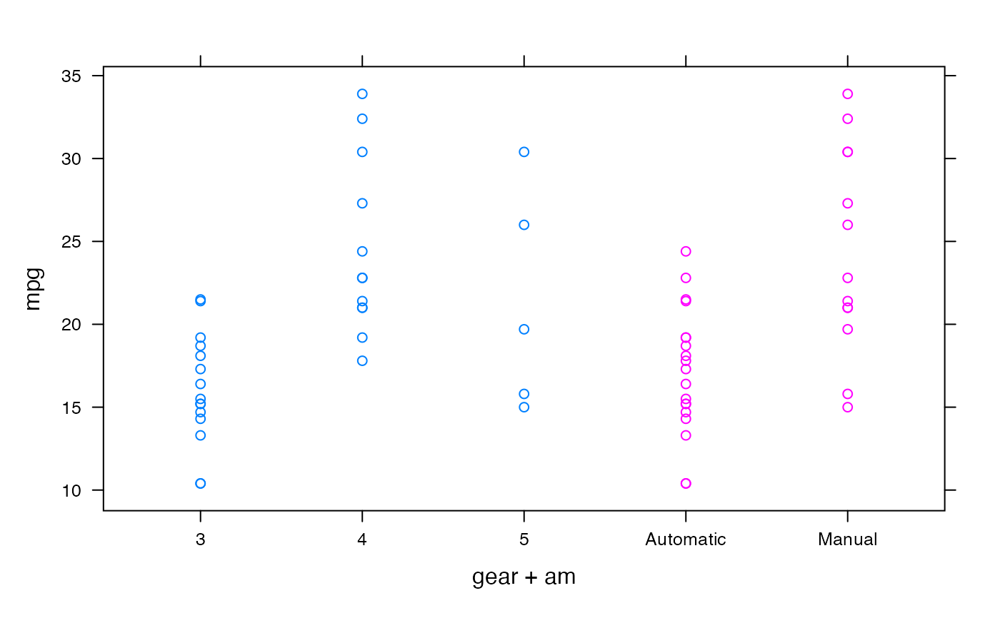
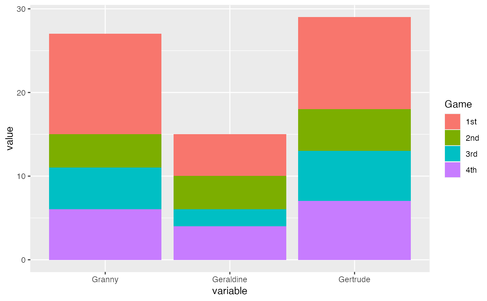

To print a listing of all examples of a chapter, use ch13().
To run all the examples of ch13(), use example(ch13).
Examples
# C hapter 13 - Manipulating and Processing Data
# Deciding on the Most Appropriate Data Structure
# Creating Subsets of Your Data
## Understanding the three subset operators
## Understanding the five ways of specifying the subset
str(islands)
#> Named num [1:48] 11506 5500 16988 2968 16 ...
#> - attr(*, "names")= chr [1:48] "Africa" "Antarctica" "Asia" "Australia" ...
islands[]
#> Africa Antarctica Asia Australia
#> 11506 5500 16988 2968
#> Axel Heiberg Baffin Banks Borneo
#> 16 184 23 280
#> Britain Celebes Celon Cuba
#> 84 73 25 43
#> Devon Ellesmere Europe Greenland
#> 21 82 3745 840
#> Hainan Hispaniola Hokkaido Honshu
#> 13 30 30 89
#> Iceland Ireland Java Kyushu
#> 40 33 49 14
#> Luzon Madagascar Melville Mindanao
#> 42 227 16 36
#> Moluccas New Britain New Guinea New Zealand (N)
#> 29 15 306 44
#> New Zealand (S) Newfoundland North America Novaya Zemlya
#> 58 43 9390 32
#> Prince of Wales Sakhalin South America Southampton
#> 13 29 6795 16
#> Spitsbergen Sumatra Taiwan Tasmania
#> 15 183 14 26
#> Tierra del Fuego Timor Vancouver Victoria
#> 19 13 12 82
islands[c(8, 1, 1, 42)]
#> Borneo Africa Africa Sumatra
#> 280 11506 11506 183
islands[-(3:46)]
#> Africa Antarctica Vancouver Victoria
#> 11506 5500 12 82
islands[islands < 20]
#> Axel Heiberg Hainan Kyushu Melville
#> 16 13 14 16
#> New Britain Prince of Wales Southampton Spitsbergen
#> 15 13 16 15
#> Taiwan Tierra del Fuego Timor Vancouver
#> 14 19 13 12
islands[c("Madagascar", "Cuba")]
#> Madagascar Cuba
#> 227 43
## Subsetting data frames
str(iris)
#> 'data.frame': 150 obs. of 5 variables:
#> $ Sepal.Length: num 5.1 4.9 4.7 4.6 5 5.4 4.6 5 4.4 4.9 ...
#> $ Sepal.Width : num 3.5 3 3.2 3.1 3.6 3.9 3.4 3.4 2.9 3.1 ...
#> $ Petal.Length: num 1.4 1.4 1.3 1.5 1.4 1.7 1.4 1.5 1.4 1.5 ...
#> $ Petal.Width : num 0.2 0.2 0.2 0.2 0.2 0.4 0.3 0.2 0.2 0.1 ...
#> $ Species : Factor w/ 3 levels "setosa","versicolor",..: 1 1 1 1 1 1 1 1 1 1 ...
iris[1:5, ]
#> Sepal.Length Sepal.Width Petal.Length Petal.Width Species
#> 1 5.1 3.5 1.4 0.2 setosa
#> 2 4.9 3.0 1.4 0.2 setosa
#> 3 4.7 3.2 1.3 0.2 setosa
#> 4 4.6 3.1 1.5 0.2 setosa
#> 5 5.0 3.6 1.4 0.2 setosa
iris[, c("Sepal.Length", "Sepal.Width")]
#> Sepal.Length Sepal.Width
#> 1 5.1 3.5
#> 2 4.9 3.0
#> 3 4.7 3.2
#> 4 4.6 3.1
#> 5 5.0 3.6
#> 6 5.4 3.9
#> 7 4.6 3.4
#> 8 5.0 3.4
#> 9 4.4 2.9
#> 10 4.9 3.1
#> 11 5.4 3.7
#> 12 4.8 3.4
#> 13 4.8 3.0
#> 14 4.3 3.0
#> 15 5.8 4.0
#> 16 5.7 4.4
#> 17 5.4 3.9
#> 18 5.1 3.5
#> 19 5.7 3.8
#> 20 5.1 3.8
#> 21 5.4 3.4
#> 22 5.1 3.7
#> 23 4.6 3.6
#> 24 5.1 3.3
#> 25 4.8 3.4
#> 26 5.0 3.0
#> 27 5.0 3.4
#> 28 5.2 3.5
#> 29 5.2 3.4
#> 30 4.7 3.2
#> 31 4.8 3.1
#> 32 5.4 3.4
#> 33 5.2 4.1
#> 34 5.5 4.2
#> 35 4.9 3.1
#> 36 5.0 3.2
#> 37 5.5 3.5
#> 38 4.9 3.6
#> 39 4.4 3.0
#> 40 5.1 3.4
#> 41 5.0 3.5
#> 42 4.5 2.3
#> 43 4.4 3.2
#> 44 5.0 3.5
#> 45 5.1 3.8
#> 46 4.8 3.0
#> 47 5.1 3.8
#> 48 4.6 3.2
#> 49 5.3 3.7
#> 50 5.0 3.3
#> 51 7.0 3.2
#> 52 6.4 3.2
#> 53 6.9 3.1
#> 54 5.5 2.3
#> 55 6.5 2.8
#> 56 5.7 2.8
#> 57 6.3 3.3
#> 58 4.9 2.4
#> 59 6.6 2.9
#> 60 5.2 2.7
#> 61 5.0 2.0
#> 62 5.9 3.0
#> 63 6.0 2.2
#> 64 6.1 2.9
#> 65 5.6 2.9
#> 66 6.7 3.1
#> 67 5.6 3.0
#> 68 5.8 2.7
#> 69 6.2 2.2
#> 70 5.6 2.5
#> 71 5.9 3.2
#> 72 6.1 2.8
#> 73 6.3 2.5
#> 74 6.1 2.8
#> 75 6.4 2.9
#> 76 6.6 3.0
#> 77 6.8 2.8
#> 78 6.7 3.0
#> 79 6.0 2.9
#> 80 5.7 2.6
#> 81 5.5 2.4
#> 82 5.5 2.4
#> 83 5.8 2.7
#> 84 6.0 2.7
#> 85 5.4 3.0
#> 86 6.0 3.4
#> 87 6.7 3.1
#> 88 6.3 2.3
#> 89 5.6 3.0
#> 90 5.5 2.5
#> 91 5.5 2.6
#> 92 6.1 3.0
#> 93 5.8 2.6
#> 94 5.0 2.3
#> 95 5.6 2.7
#> 96 5.7 3.0
#> 97 5.7 2.9
#> 98 6.2 2.9
#> 99 5.1 2.5
#> 100 5.7 2.8
#> 101 6.3 3.3
#> 102 5.8 2.7
#> 103 7.1 3.0
#> 104 6.3 2.9
#> 105 6.5 3.0
#> 106 7.6 3.0
#> 107 4.9 2.5
#> 108 7.3 2.9
#> 109 6.7 2.5
#> 110 7.2 3.6
#> 111 6.5 3.2
#> 112 6.4 2.7
#> 113 6.8 3.0
#> 114 5.7 2.5
#> 115 5.8 2.8
#> 116 6.4 3.2
#> 117 6.5 3.0
#> 118 7.7 3.8
#> 119 7.7 2.6
#> 120 6.0 2.2
#> 121 6.9 3.2
#> 122 5.6 2.8
#> 123 7.7 2.8
#> 124 6.3 2.7
#> 125 6.7 3.3
#> 126 7.2 3.2
#> 127 6.2 2.8
#> 128 6.1 3.0
#> 129 6.4 2.8
#> 130 7.2 3.0
#> 131 7.4 2.8
#> 132 7.9 3.8
#> 133 6.4 2.8
#> 134 6.3 2.8
#> 135 6.1 2.6
#> 136 7.7 3.0
#> 137 6.3 3.4
#> 138 6.4 3.1
#> 139 6.0 3.0
#> 140 6.9 3.1
#> 141 6.7 3.1
#> 142 6.9 3.1
#> 143 5.8 2.7
#> 144 6.8 3.2
#> 145 6.7 3.3
#> 146 6.7 3.0
#> 147 6.3 2.5
#> 148 6.5 3.0
#> 149 6.2 3.4
#> 150 5.9 3.0
iris[, 'Sepal.Length']
#> [1] 5.1 4.9 4.7 4.6 5.0 5.4 4.6 5.0 4.4 4.9 5.4 4.8 4.8 4.3 5.8 5.7 5.4 5.1
#> [19] 5.7 5.1 5.4 5.1 4.6 5.1 4.8 5.0 5.0 5.2 5.2 4.7 4.8 5.4 5.2 5.5 4.9 5.0
#> [37] 5.5 4.9 4.4 5.1 5.0 4.5 4.4 5.0 5.1 4.8 5.1 4.6 5.3 5.0 7.0 6.4 6.9 5.5
#> [55] 6.5 5.7 6.3 4.9 6.6 5.2 5.0 5.9 6.0 6.1 5.6 6.7 5.6 5.8 6.2 5.6 5.9 6.1
#> [73] 6.3 6.1 6.4 6.6 6.8 6.7 6.0 5.7 5.5 5.5 5.8 6.0 5.4 6.0 6.7 6.3 5.6 5.5
#> [91] 5.5 6.1 5.8 5.0 5.6 5.7 5.7 6.2 5.1 5.7 6.3 5.8 7.1 6.3 6.5 7.6 4.9 7.3
#> [109] 6.7 7.2 6.5 6.4 6.8 5.7 5.8 6.4 6.5 7.7 7.7 6.0 6.9 5.6 7.7 6.3 6.7 7.2
#> [127] 6.2 6.1 6.4 7.2 7.4 7.9 6.4 6.3 6.1 7.7 6.3 6.4 6.0 6.9 6.7 6.9 5.8 6.8
#> [145] 6.7 6.7 6.3 6.5 6.2 5.9
iris[, 'Sepal.Length', drop=FALSE]
#> Sepal.Length
#> 1 5.1
#> 2 4.9
#> 3 4.7
#> 4 4.6
#> 5 5.0
#> 6 5.4
#> 7 4.6
#> 8 5.0
#> 9 4.4
#> 10 4.9
#> 11 5.4
#> 12 4.8
#> 13 4.8
#> 14 4.3
#> 15 5.8
#> 16 5.7
#> 17 5.4
#> 18 5.1
#> 19 5.7
#> 20 5.1
#> 21 5.4
#> 22 5.1
#> 23 4.6
#> 24 5.1
#> 25 4.8
#> 26 5.0
#> 27 5.0
#> 28 5.2
#> 29 5.2
#> 30 4.7
#> 31 4.8
#> 32 5.4
#> 33 5.2
#> 34 5.5
#> 35 4.9
#> 36 5.0
#> 37 5.5
#> 38 4.9
#> 39 4.4
#> 40 5.1
#> 41 5.0
#> 42 4.5
#> 43 4.4
#> 44 5.0
#> 45 5.1
#> 46 4.8
#> 47 5.1
#> 48 4.6
#> 49 5.3
#> 50 5.0
#> 51 7.0
#> 52 6.4
#> 53 6.9
#> 54 5.5
#> 55 6.5
#> 56 5.7
#> 57 6.3
#> 58 4.9
#> 59 6.6
#> 60 5.2
#> 61 5.0
#> 62 5.9
#> 63 6.0
#> 64 6.1
#> 65 5.6
#> 66 6.7
#> 67 5.6
#> 68 5.8
#> 69 6.2
#> 70 5.6
#> 71 5.9
#> 72 6.1
#> 73 6.3
#> 74 6.1
#> 75 6.4
#> 76 6.6
#> 77 6.8
#> 78 6.7
#> 79 6.0
#> 80 5.7
#> 81 5.5
#> 82 5.5
#> 83 5.8
#> 84 6.0
#> 85 5.4
#> 86 6.0
#> 87 6.7
#> 88 6.3
#> 89 5.6
#> 90 5.5
#> 91 5.5
#> 92 6.1
#> 93 5.8
#> 94 5.0
#> 95 5.6
#> 96 5.7
#> 97 5.7
#> 98 6.2
#> 99 5.1
#> 100 5.7
#> 101 6.3
#> 102 5.8
#> 103 7.1
#> 104 6.3
#> 105 6.5
#> 106 7.6
#> 107 4.9
#> 108 7.3
#> 109 6.7
#> 110 7.2
#> 111 6.5
#> 112 6.4
#> 113 6.8
#> 114 5.7
#> 115 5.8
#> 116 6.4
#> 117 6.5
#> 118 7.7
#> 119 7.7
#> 120 6.0
#> 121 6.9
#> 122 5.6
#> 123 7.7
#> 124 6.3
#> 125 6.7
#> 126 7.2
#> 127 6.2
#> 128 6.1
#> 129 6.4
#> 130 7.2
#> 131 7.4
#> 132 7.9
#> 133 6.4
#> 134 6.3
#> 135 6.1
#> 136 7.7
#> 137 6.3
#> 138 6.4
#> 139 6.0
#> 140 6.9
#> 141 6.7
#> 142 6.9
#> 143 5.8
#> 144 6.8
#> 145 6.7
#> 146 6.7
#> 147 6.3
#> 148 6.5
#> 149 6.2
#> 150 5.9
iris['Sepal.Length']
#> Sepal.Length
#> 1 5.1
#> 2 4.9
#> 3 4.7
#> 4 4.6
#> 5 5.0
#> 6 5.4
#> 7 4.6
#> 8 5.0
#> 9 4.4
#> 10 4.9
#> 11 5.4
#> 12 4.8
#> 13 4.8
#> 14 4.3
#> 15 5.8
#> 16 5.7
#> 17 5.4
#> 18 5.1
#> 19 5.7
#> 20 5.1
#> 21 5.4
#> 22 5.1
#> 23 4.6
#> 24 5.1
#> 25 4.8
#> 26 5.0
#> 27 5.0
#> 28 5.2
#> 29 5.2
#> 30 4.7
#> 31 4.8
#> 32 5.4
#> 33 5.2
#> 34 5.5
#> 35 4.9
#> 36 5.0
#> 37 5.5
#> 38 4.9
#> 39 4.4
#> 40 5.1
#> 41 5.0
#> 42 4.5
#> 43 4.4
#> 44 5.0
#> 45 5.1
#> 46 4.8
#> 47 5.1
#> 48 4.6
#> 49 5.3
#> 50 5.0
#> 51 7.0
#> 52 6.4
#> 53 6.9
#> 54 5.5
#> 55 6.5
#> 56 5.7
#> 57 6.3
#> 58 4.9
#> 59 6.6
#> 60 5.2
#> 61 5.0
#> 62 5.9
#> 63 6.0
#> 64 6.1
#> 65 5.6
#> 66 6.7
#> 67 5.6
#> 68 5.8
#> 69 6.2
#> 70 5.6
#> 71 5.9
#> 72 6.1
#> 73 6.3
#> 74 6.1
#> 75 6.4
#> 76 6.6
#> 77 6.8
#> 78 6.7
#> 79 6.0
#> 80 5.7
#> 81 5.5
#> 82 5.5
#> 83 5.8
#> 84 6.0
#> 85 5.4
#> 86 6.0
#> 87 6.7
#> 88 6.3
#> 89 5.6
#> 90 5.5
#> 91 5.5
#> 92 6.1
#> 93 5.8
#> 94 5.0
#> 95 5.6
#> 96 5.7
#> 97 5.7
#> 98 6.2
#> 99 5.1
#> 100 5.7
#> 101 6.3
#> 102 5.8
#> 103 7.1
#> 104 6.3
#> 105 6.5
#> 106 7.6
#> 107 4.9
#> 108 7.3
#> 109 6.7
#> 110 7.2
#> 111 6.5
#> 112 6.4
#> 113 6.8
#> 114 5.7
#> 115 5.8
#> 116 6.4
#> 117 6.5
#> 118 7.7
#> 119 7.7
#> 120 6.0
#> 121 6.9
#> 122 5.6
#> 123 7.7
#> 124 6.3
#> 125 6.7
#> 126 7.2
#> 127 6.2
#> 128 6.1
#> 129 6.4
#> 130 7.2
#> 131 7.4
#> 132 7.9
#> 133 6.4
#> 134 6.3
#> 135 6.1
#> 136 7.7
#> 137 6.3
#> 138 6.4
#> 139 6.0
#> 140 6.9
#> 141 6.7
#> 142 6.9
#> 143 5.8
#> 144 6.8
#> 145 6.7
#> 146 6.7
#> 147 6.3
#> 148 6.5
#> 149 6.2
#> 150 5.9
iris[1:5, c("Sepal.Length", "Sepal.Width")]
#> Sepal.Length Sepal.Width
#> 1 5.1 3.5
#> 2 4.9 3.0
#> 3 4.7 3.2
#> 4 4.6 3.1
#> 5 5.0 3.6
### Taking samples from data
sample(1:6, 10, replace=TRUE)
#> [1] 4 1 5 6 4 2 2 3 1 1
set.seed(1)
sample(1:6, 10, replace=TRUE)
#> [1] 1 4 1 2 5 3 6 2 3 3
sample(1:6, 10, replace=TRUE)
#> [1] 1 5 5 2 6 6 2 1 5 5
set.seed(1)
sample(1:6, 10, replace=TRUE)
#> [1] 1 4 1 2 5 3 6 2 3 3
set.seed(123)
index <- sample(1:nrow(iris), 5)
index
#> [1] 14 50 118 43 150
iris[index, ]
#> Sepal.Length Sepal.Width Petal.Length Petal.Width Species
#> 14 4.3 3.0 1.1 0.1 setosa
#> 50 5.0 3.3 1.4 0.2 setosa
#> 118 7.7 3.8 6.7 2.2 virginica
#> 43 4.4 3.2 1.3 0.2 setosa
#> 150 5.9 3.0 5.1 1.8 virginica
### Removing duplicate data
duplicated(c(1,2,1,3,1,4))
#> [1] FALSE FALSE TRUE FALSE TRUE FALSE
duplicated(iris)
#> [1] FALSE FALSE FALSE FALSE FALSE FALSE FALSE FALSE FALSE FALSE FALSE FALSE
#> [13] FALSE FALSE FALSE FALSE FALSE FALSE FALSE FALSE FALSE FALSE FALSE FALSE
#> [25] FALSE FALSE FALSE FALSE FALSE FALSE FALSE FALSE FALSE FALSE FALSE FALSE
#> [37] FALSE FALSE FALSE FALSE FALSE FALSE FALSE FALSE FALSE FALSE FALSE FALSE
#> [49] FALSE FALSE FALSE FALSE FALSE FALSE FALSE FALSE FALSE FALSE FALSE FALSE
#> [61] FALSE FALSE FALSE FALSE FALSE FALSE FALSE FALSE FALSE FALSE FALSE FALSE
#> [73] FALSE FALSE FALSE FALSE FALSE FALSE FALSE FALSE FALSE FALSE FALSE FALSE
#> [85] FALSE FALSE FALSE FALSE FALSE FALSE FALSE FALSE FALSE FALSE FALSE FALSE
#> [97] FALSE FALSE FALSE FALSE FALSE FALSE FALSE FALSE FALSE FALSE FALSE FALSE
#> [109] FALSE FALSE FALSE FALSE FALSE FALSE FALSE FALSE FALSE FALSE FALSE FALSE
#> [121] FALSE FALSE FALSE FALSE FALSE FALSE FALSE FALSE FALSE FALSE FALSE FALSE
#> [133] FALSE FALSE FALSE FALSE FALSE FALSE FALSE FALSE FALSE FALSE TRUE FALSE
#> [145] FALSE FALSE FALSE FALSE FALSE FALSE
which(duplicated(iris))
#> [1] 143
iris[!duplicated(iris), ]
#> Sepal.Length Sepal.Width Petal.Length Petal.Width Species
#> 1 5.1 3.5 1.4 0.2 setosa
#> 2 4.9 3.0 1.4 0.2 setosa
#> 3 4.7 3.2 1.3 0.2 setosa
#> 4 4.6 3.1 1.5 0.2 setosa
#> 5 5.0 3.6 1.4 0.2 setosa
#> 6 5.4 3.9 1.7 0.4 setosa
#> 7 4.6 3.4 1.4 0.3 setosa
#> 8 5.0 3.4 1.5 0.2 setosa
#> 9 4.4 2.9 1.4 0.2 setosa
#> 10 4.9 3.1 1.5 0.1 setosa
#> 11 5.4 3.7 1.5 0.2 setosa
#> 12 4.8 3.4 1.6 0.2 setosa
#> 13 4.8 3.0 1.4 0.1 setosa
#> 14 4.3 3.0 1.1 0.1 setosa
#> 15 5.8 4.0 1.2 0.2 setosa
#> 16 5.7 4.4 1.5 0.4 setosa
#> 17 5.4 3.9 1.3 0.4 setosa
#> 18 5.1 3.5 1.4 0.3 setosa
#> 19 5.7 3.8 1.7 0.3 setosa
#> 20 5.1 3.8 1.5 0.3 setosa
#> 21 5.4 3.4 1.7 0.2 setosa
#> 22 5.1 3.7 1.5 0.4 setosa
#> 23 4.6 3.6 1.0 0.2 setosa
#> 24 5.1 3.3 1.7 0.5 setosa
#> 25 4.8 3.4 1.9 0.2 setosa
#> 26 5.0 3.0 1.6 0.2 setosa
#> 27 5.0 3.4 1.6 0.4 setosa
#> 28 5.2 3.5 1.5 0.2 setosa
#> 29 5.2 3.4 1.4 0.2 setosa
#> 30 4.7 3.2 1.6 0.2 setosa
#> 31 4.8 3.1 1.6 0.2 setosa
#> 32 5.4 3.4 1.5 0.4 setosa
#> 33 5.2 4.1 1.5 0.1 setosa
#> 34 5.5 4.2 1.4 0.2 setosa
#> 35 4.9 3.1 1.5 0.2 setosa
#> 36 5.0 3.2 1.2 0.2 setosa
#> 37 5.5 3.5 1.3 0.2 setosa
#> 38 4.9 3.6 1.4 0.1 setosa
#> 39 4.4 3.0 1.3 0.2 setosa
#> 40 5.1 3.4 1.5 0.2 setosa
#> 41 5.0 3.5 1.3 0.3 setosa
#> 42 4.5 2.3 1.3 0.3 setosa
#> 43 4.4 3.2 1.3 0.2 setosa
#> 44 5.0 3.5 1.6 0.6 setosa
#> 45 5.1 3.8 1.9 0.4 setosa
#> 46 4.8 3.0 1.4 0.3 setosa
#> 47 5.1 3.8 1.6 0.2 setosa
#> 48 4.6 3.2 1.4 0.2 setosa
#> 49 5.3 3.7 1.5 0.2 setosa
#> 50 5.0 3.3 1.4 0.2 setosa
#> 51 7.0 3.2 4.7 1.4 versicolor
#> 52 6.4 3.2 4.5 1.5 versicolor
#> 53 6.9 3.1 4.9 1.5 versicolor
#> 54 5.5 2.3 4.0 1.3 versicolor
#> 55 6.5 2.8 4.6 1.5 versicolor
#> 56 5.7 2.8 4.5 1.3 versicolor
#> 57 6.3 3.3 4.7 1.6 versicolor
#> 58 4.9 2.4 3.3 1.0 versicolor
#> 59 6.6 2.9 4.6 1.3 versicolor
#> 60 5.2 2.7 3.9 1.4 versicolor
#> 61 5.0 2.0 3.5 1.0 versicolor
#> 62 5.9 3.0 4.2 1.5 versicolor
#> 63 6.0 2.2 4.0 1.0 versicolor
#> 64 6.1 2.9 4.7 1.4 versicolor
#> 65 5.6 2.9 3.6 1.3 versicolor
#> 66 6.7 3.1 4.4 1.4 versicolor
#> 67 5.6 3.0 4.5 1.5 versicolor
#> 68 5.8 2.7 4.1 1.0 versicolor
#> 69 6.2 2.2 4.5 1.5 versicolor
#> 70 5.6 2.5 3.9 1.1 versicolor
#> 71 5.9 3.2 4.8 1.8 versicolor
#> 72 6.1 2.8 4.0 1.3 versicolor
#> 73 6.3 2.5 4.9 1.5 versicolor
#> 74 6.1 2.8 4.7 1.2 versicolor
#> 75 6.4 2.9 4.3 1.3 versicolor
#> 76 6.6 3.0 4.4 1.4 versicolor
#> 77 6.8 2.8 4.8 1.4 versicolor
#> 78 6.7 3.0 5.0 1.7 versicolor
#> 79 6.0 2.9 4.5 1.5 versicolor
#> 80 5.7 2.6 3.5 1.0 versicolor
#> 81 5.5 2.4 3.8 1.1 versicolor
#> 82 5.5 2.4 3.7 1.0 versicolor
#> 83 5.8 2.7 3.9 1.2 versicolor
#> 84 6.0 2.7 5.1 1.6 versicolor
#> 85 5.4 3.0 4.5 1.5 versicolor
#> 86 6.0 3.4 4.5 1.6 versicolor
#> 87 6.7 3.1 4.7 1.5 versicolor
#> 88 6.3 2.3 4.4 1.3 versicolor
#> 89 5.6 3.0 4.1 1.3 versicolor
#> 90 5.5 2.5 4.0 1.3 versicolor
#> 91 5.5 2.6 4.4 1.2 versicolor
#> 92 6.1 3.0 4.6 1.4 versicolor
#> 93 5.8 2.6 4.0 1.2 versicolor
#> 94 5.0 2.3 3.3 1.0 versicolor
#> 95 5.6 2.7 4.2 1.3 versicolor
#> 96 5.7 3.0 4.2 1.2 versicolor
#> 97 5.7 2.9 4.2 1.3 versicolor
#> 98 6.2 2.9 4.3 1.3 versicolor
#> 99 5.1 2.5 3.0 1.1 versicolor
#> 100 5.7 2.8 4.1 1.3 versicolor
#> 101 6.3 3.3 6.0 2.5 virginica
#> 102 5.8 2.7 5.1 1.9 virginica
#> 103 7.1 3.0 5.9 2.1 virginica
#> 104 6.3 2.9 5.6 1.8 virginica
#> 105 6.5 3.0 5.8 2.2 virginica
#> 106 7.6 3.0 6.6 2.1 virginica
#> 107 4.9 2.5 4.5 1.7 virginica
#> 108 7.3 2.9 6.3 1.8 virginica
#> 109 6.7 2.5 5.8 1.8 virginica
#> 110 7.2 3.6 6.1 2.5 virginica
#> 111 6.5 3.2 5.1 2.0 virginica
#> 112 6.4 2.7 5.3 1.9 virginica
#> 113 6.8 3.0 5.5 2.1 virginica
#> 114 5.7 2.5 5.0 2.0 virginica
#> 115 5.8 2.8 5.1 2.4 virginica
#> 116 6.4 3.2 5.3 2.3 virginica
#> 117 6.5 3.0 5.5 1.8 virginica
#> 118 7.7 3.8 6.7 2.2 virginica
#> 119 7.7 2.6 6.9 2.3 virginica
#> 120 6.0 2.2 5.0 1.5 virginica
#> 121 6.9 3.2 5.7 2.3 virginica
#> 122 5.6 2.8 4.9 2.0 virginica
#> 123 7.7 2.8 6.7 2.0 virginica
#> 124 6.3 2.7 4.9 1.8 virginica
#> 125 6.7 3.3 5.7 2.1 virginica
#> 126 7.2 3.2 6.0 1.8 virginica
#> 127 6.2 2.8 4.8 1.8 virginica
#> 128 6.1 3.0 4.9 1.8 virginica
#> 129 6.4 2.8 5.6 2.1 virginica
#> 130 7.2 3.0 5.8 1.6 virginica
#> 131 7.4 2.8 6.1 1.9 virginica
#> 132 7.9 3.8 6.4 2.0 virginica
#> 133 6.4 2.8 5.6 2.2 virginica
#> 134 6.3 2.8 5.1 1.5 virginica
#> 135 6.1 2.6 5.6 1.4 virginica
#> 136 7.7 3.0 6.1 2.3 virginica
#> 137 6.3 3.4 5.6 2.4 virginica
#> 138 6.4 3.1 5.5 1.8 virginica
#> 139 6.0 3.0 4.8 1.8 virginica
#> 140 6.9 3.1 5.4 2.1 virginica
#> 141 6.7 3.1 5.6 2.4 virginica
#> 142 6.9 3.1 5.1 2.3 virginica
#> 144 6.8 3.2 5.9 2.3 virginica
#> 145 6.7 3.3 5.7 2.5 virginica
#> 146 6.7 3.0 5.2 2.3 virginica
#> 147 6.3 2.5 5.0 1.9 virginica
#> 148 6.5 3.0 5.2 2.0 virginica
#> 149 6.2 3.4 5.4 2.3 virginica
#> 150 5.9 3.0 5.1 1.8 virginica
index <- which(duplicated(iris))
iris[-index, ]
#> Sepal.Length Sepal.Width Petal.Length Petal.Width Species
#> 1 5.1 3.5 1.4 0.2 setosa
#> 2 4.9 3.0 1.4 0.2 setosa
#> 3 4.7 3.2 1.3 0.2 setosa
#> 4 4.6 3.1 1.5 0.2 setosa
#> 5 5.0 3.6 1.4 0.2 setosa
#> 6 5.4 3.9 1.7 0.4 setosa
#> 7 4.6 3.4 1.4 0.3 setosa
#> 8 5.0 3.4 1.5 0.2 setosa
#> 9 4.4 2.9 1.4 0.2 setosa
#> 10 4.9 3.1 1.5 0.1 setosa
#> 11 5.4 3.7 1.5 0.2 setosa
#> 12 4.8 3.4 1.6 0.2 setosa
#> 13 4.8 3.0 1.4 0.1 setosa
#> 14 4.3 3.0 1.1 0.1 setosa
#> 15 5.8 4.0 1.2 0.2 setosa
#> 16 5.7 4.4 1.5 0.4 setosa
#> 17 5.4 3.9 1.3 0.4 setosa
#> 18 5.1 3.5 1.4 0.3 setosa
#> 19 5.7 3.8 1.7 0.3 setosa
#> 20 5.1 3.8 1.5 0.3 setosa
#> 21 5.4 3.4 1.7 0.2 setosa
#> 22 5.1 3.7 1.5 0.4 setosa
#> 23 4.6 3.6 1.0 0.2 setosa
#> 24 5.1 3.3 1.7 0.5 setosa
#> 25 4.8 3.4 1.9 0.2 setosa
#> 26 5.0 3.0 1.6 0.2 setosa
#> 27 5.0 3.4 1.6 0.4 setosa
#> 28 5.2 3.5 1.5 0.2 setosa
#> 29 5.2 3.4 1.4 0.2 setosa
#> 30 4.7 3.2 1.6 0.2 setosa
#> 31 4.8 3.1 1.6 0.2 setosa
#> 32 5.4 3.4 1.5 0.4 setosa
#> 33 5.2 4.1 1.5 0.1 setosa
#> 34 5.5 4.2 1.4 0.2 setosa
#> 35 4.9 3.1 1.5 0.2 setosa
#> 36 5.0 3.2 1.2 0.2 setosa
#> 37 5.5 3.5 1.3 0.2 setosa
#> 38 4.9 3.6 1.4 0.1 setosa
#> 39 4.4 3.0 1.3 0.2 setosa
#> 40 5.1 3.4 1.5 0.2 setosa
#> 41 5.0 3.5 1.3 0.3 setosa
#> 42 4.5 2.3 1.3 0.3 setosa
#> 43 4.4 3.2 1.3 0.2 setosa
#> 44 5.0 3.5 1.6 0.6 setosa
#> 45 5.1 3.8 1.9 0.4 setosa
#> 46 4.8 3.0 1.4 0.3 setosa
#> 47 5.1 3.8 1.6 0.2 setosa
#> 48 4.6 3.2 1.4 0.2 setosa
#> 49 5.3 3.7 1.5 0.2 setosa
#> 50 5.0 3.3 1.4 0.2 setosa
#> 51 7.0 3.2 4.7 1.4 versicolor
#> 52 6.4 3.2 4.5 1.5 versicolor
#> 53 6.9 3.1 4.9 1.5 versicolor
#> 54 5.5 2.3 4.0 1.3 versicolor
#> 55 6.5 2.8 4.6 1.5 versicolor
#> 56 5.7 2.8 4.5 1.3 versicolor
#> 57 6.3 3.3 4.7 1.6 versicolor
#> 58 4.9 2.4 3.3 1.0 versicolor
#> 59 6.6 2.9 4.6 1.3 versicolor
#> 60 5.2 2.7 3.9 1.4 versicolor
#> 61 5.0 2.0 3.5 1.0 versicolor
#> 62 5.9 3.0 4.2 1.5 versicolor
#> 63 6.0 2.2 4.0 1.0 versicolor
#> 64 6.1 2.9 4.7 1.4 versicolor
#> 65 5.6 2.9 3.6 1.3 versicolor
#> 66 6.7 3.1 4.4 1.4 versicolor
#> 67 5.6 3.0 4.5 1.5 versicolor
#> 68 5.8 2.7 4.1 1.0 versicolor
#> 69 6.2 2.2 4.5 1.5 versicolor
#> 70 5.6 2.5 3.9 1.1 versicolor
#> 71 5.9 3.2 4.8 1.8 versicolor
#> 72 6.1 2.8 4.0 1.3 versicolor
#> 73 6.3 2.5 4.9 1.5 versicolor
#> 74 6.1 2.8 4.7 1.2 versicolor
#> 75 6.4 2.9 4.3 1.3 versicolor
#> 76 6.6 3.0 4.4 1.4 versicolor
#> 77 6.8 2.8 4.8 1.4 versicolor
#> 78 6.7 3.0 5.0 1.7 versicolor
#> 79 6.0 2.9 4.5 1.5 versicolor
#> 80 5.7 2.6 3.5 1.0 versicolor
#> 81 5.5 2.4 3.8 1.1 versicolor
#> 82 5.5 2.4 3.7 1.0 versicolor
#> 83 5.8 2.7 3.9 1.2 versicolor
#> 84 6.0 2.7 5.1 1.6 versicolor
#> 85 5.4 3.0 4.5 1.5 versicolor
#> 86 6.0 3.4 4.5 1.6 versicolor
#> 87 6.7 3.1 4.7 1.5 versicolor
#> 88 6.3 2.3 4.4 1.3 versicolor
#> 89 5.6 3.0 4.1 1.3 versicolor
#> 90 5.5 2.5 4.0 1.3 versicolor
#> 91 5.5 2.6 4.4 1.2 versicolor
#> 92 6.1 3.0 4.6 1.4 versicolor
#> 93 5.8 2.6 4.0 1.2 versicolor
#> 94 5.0 2.3 3.3 1.0 versicolor
#> 95 5.6 2.7 4.2 1.3 versicolor
#> 96 5.7 3.0 4.2 1.2 versicolor
#> 97 5.7 2.9 4.2 1.3 versicolor
#> 98 6.2 2.9 4.3 1.3 versicolor
#> 99 5.1 2.5 3.0 1.1 versicolor
#> 100 5.7 2.8 4.1 1.3 versicolor
#> 101 6.3 3.3 6.0 2.5 virginica
#> 102 5.8 2.7 5.1 1.9 virginica
#> 103 7.1 3.0 5.9 2.1 virginica
#> 104 6.3 2.9 5.6 1.8 virginica
#> 105 6.5 3.0 5.8 2.2 virginica
#> 106 7.6 3.0 6.6 2.1 virginica
#> 107 4.9 2.5 4.5 1.7 virginica
#> 108 7.3 2.9 6.3 1.8 virginica
#> 109 6.7 2.5 5.8 1.8 virginica
#> 110 7.2 3.6 6.1 2.5 virginica
#> 111 6.5 3.2 5.1 2.0 virginica
#> 112 6.4 2.7 5.3 1.9 virginica
#> 113 6.8 3.0 5.5 2.1 virginica
#> 114 5.7 2.5 5.0 2.0 virginica
#> 115 5.8 2.8 5.1 2.4 virginica
#> 116 6.4 3.2 5.3 2.3 virginica
#> 117 6.5 3.0 5.5 1.8 virginica
#> 118 7.7 3.8 6.7 2.2 virginica
#> 119 7.7 2.6 6.9 2.3 virginica
#> 120 6.0 2.2 5.0 1.5 virginica
#> 121 6.9 3.2 5.7 2.3 virginica
#> 122 5.6 2.8 4.9 2.0 virginica
#> 123 7.7 2.8 6.7 2.0 virginica
#> 124 6.3 2.7 4.9 1.8 virginica
#> 125 6.7 3.3 5.7 2.1 virginica
#> 126 7.2 3.2 6.0 1.8 virginica
#> 127 6.2 2.8 4.8 1.8 virginica
#> 128 6.1 3.0 4.9 1.8 virginica
#> 129 6.4 2.8 5.6 2.1 virginica
#> 130 7.2 3.0 5.8 1.6 virginica
#> 131 7.4 2.8 6.1 1.9 virginica
#> 132 7.9 3.8 6.4 2.0 virginica
#> 133 6.4 2.8 5.6 2.2 virginica
#> 134 6.3 2.8 5.1 1.5 virginica
#> 135 6.1 2.6 5.6 1.4 virginica
#> 136 7.7 3.0 6.1 2.3 virginica
#> 137 6.3 3.4 5.6 2.4 virginica
#> 138 6.4 3.1 5.5 1.8 virginica
#> 139 6.0 3.0 4.8 1.8 virginica
#> 140 6.9 3.1 5.4 2.1 virginica
#> 141 6.7 3.1 5.6 2.4 virginica
#> 142 6.9 3.1 5.1 2.3 virginica
#> 144 6.8 3.2 5.9 2.3 virginica
#> 145 6.7 3.3 5.7 2.5 virginica
#> 146 6.7 3.0 5.2 2.3 virginica
#> 147 6.3 2.5 5.0 1.9 virginica
#> 148 6.5 3.0 5.2 2.0 virginica
#> 149 6.2 3.4 5.4 2.3 virginica
#> 150 5.9 3.0 5.1 1.8 virginica
### Removing rows with missing data
str(airquality)
#> 'data.frame': 153 obs. of 6 variables:
#> $ Ozone : int 41 36 12 18 NA 28 23 19 8 NA ...
#> $ Solar.R: int 190 118 149 313 NA NA 299 99 19 194 ...
#> $ Wind : num 7.4 8 12.6 11.5 14.3 14.9 8.6 13.8 20.1 8.6 ...
#> $ Temp : int 67 72 74 62 56 66 65 59 61 69 ...
#> $ Month : int 5 5 5 5 5 5 5 5 5 5 ...
#> $ Day : int 1 2 3 4 5 6 7 8 9 10 ...
complete.cases(airquality)
#> [1] TRUE TRUE TRUE TRUE FALSE FALSE TRUE TRUE TRUE FALSE FALSE TRUE
#> [13] TRUE TRUE TRUE TRUE TRUE TRUE TRUE TRUE TRUE TRUE TRUE TRUE
#> [25] FALSE FALSE FALSE TRUE TRUE TRUE TRUE FALSE FALSE FALSE FALSE FALSE
#> [37] FALSE TRUE FALSE TRUE TRUE FALSE FALSE TRUE FALSE FALSE TRUE TRUE
#> [49] TRUE TRUE TRUE FALSE FALSE FALSE FALSE FALSE FALSE FALSE FALSE FALSE
#> [61] FALSE TRUE TRUE TRUE FALSE TRUE TRUE TRUE TRUE TRUE TRUE FALSE
#> [73] TRUE TRUE FALSE TRUE TRUE TRUE TRUE TRUE TRUE TRUE FALSE FALSE
#> [85] TRUE TRUE TRUE TRUE TRUE TRUE TRUE TRUE TRUE TRUE TRUE FALSE
#> [97] FALSE FALSE TRUE TRUE TRUE FALSE FALSE TRUE TRUE TRUE FALSE TRUE
#> [109] TRUE TRUE TRUE TRUE TRUE TRUE FALSE TRUE TRUE TRUE FALSE TRUE
#> [121] TRUE TRUE TRUE TRUE TRUE TRUE TRUE TRUE TRUE TRUE TRUE TRUE
#> [133] TRUE TRUE TRUE TRUE TRUE TRUE TRUE TRUE TRUE TRUE TRUE TRUE
#> [145] TRUE TRUE TRUE TRUE TRUE FALSE TRUE TRUE TRUE
x <- airquality[complete.cases(airquality), ]
str(x)
#> 'data.frame': 111 obs. of 6 variables:
#> $ Ozone : int 41 36 12 18 23 19 8 16 11 14 ...
#> $ Solar.R: int 190 118 149 313 299 99 19 256 290 274 ...
#> $ Wind : num 7.4 8 12.6 11.5 8.6 13.8 20.1 9.7 9.2 10.9 ...
#> $ Temp : int 67 72 74 62 65 59 61 69 66 68 ...
#> $ Month : int 5 5 5 5 5 5 5 5 5 5 ...
#> $ Day : int 1 2 3 4 7 8 9 12 13 14 ...
x <- na.omit(airquality)
# Adding Calculated Fields to Data
## Doing arithmetic on columns of a data frame
x <- iris$Sepal.Length / iris$Sepal.Width
head(x)
#> [1] 1.457143 1.633333 1.468750 1.483871 1.388889 1.384615
## Using with and within to improve code readability
y <- with(iris, Sepal.Length / Sepal.Width)
head(y)
#> [1] 1.457143 1.633333 1.468750 1.483871 1.388889 1.384615
identical(x, y)
#> [1] TRUE
iris$ratio <- iris$Sepal.Length / iris$Sepal.Width
iris <- within(iris, ratio <- Sepal.Length / Sepal.Width)
head(iris$ratio)
#> [1] 1.457143 1.633333 1.468750 1.483871 1.388889 1.384615
## Creating subgroups or bins of data
### Using cut to create a fixed number of subgroups
head(state.x77)
#> Population Income Illiteracy Life Exp Murder HS Grad Frost Area
#> Alabama 3615 3624 2.1 69.05 15.1 41.3 20 50708
#> Alaska 365 6315 1.5 69.31 11.3 66.7 152 566432
#> Arizona 2212 4530 1.8 70.55 7.8 58.1 15 113417
#> Arkansas 2110 3378 1.9 70.66 10.1 39.9 65 51945
#> California 21198 5114 1.1 71.71 10.3 62.6 20 156361
#> Colorado 2541 4884 0.7 72.06 6.8 63.9 166 103766
frost <- state.x77[, "Frost"]
head(frost, 5)
#> Alabama Alaska Arizona Arkansas California
#> 20 152 15 65 20
cut(frost, 3, include.lowest=TRUE)
#> [1] [-0.188,62.7] (125,188] [-0.188,62.7] (62.7,125] [-0.188,62.7]
#> [6] (125,188] (125,188] (62.7,125] [-0.188,62.7] [-0.188,62.7]
#> [11] [-0.188,62.7] (125,188] (125,188] (62.7,125] (125,188]
#> [16] (62.7,125] (62.7,125] [-0.188,62.7] (125,188] (62.7,125]
#> [21] (62.7,125] (62.7,125] (125,188] [-0.188,62.7] (62.7,125]
#> [26] (125,188] (125,188] (125,188] (125,188] (62.7,125]
#> [31] (62.7,125] (62.7,125] (62.7,125] (125,188] (62.7,125]
#> [36] (62.7,125] [-0.188,62.7] (125,188] (125,188] (62.7,125]
#> [41] (125,188] (62.7,125] [-0.188,62.7] (125,188] (125,188]
#> [46] (62.7,125] [-0.188,62.7] (62.7,125] (125,188] (125,188]
#> Levels: [-0.188,62.7] (62.7,125] (125,188]
### Adding labels to cut
cut(frost, 3, include.lowest=TRUE, labels=c("Low", "Med", "High"))
#> [1] Low High Low Med Low High High Med Low Low Low High High Med High
#> [16] Med Med Low High Med Med Med High Low Med High High High High Med
#> [31] Med Med Med High Med Med Low High High Med High Med Low High High
#> [46] Med Low Med High High
#> Levels: Low Med High
### Using table to count the number of observations
x <- cut(frost, 3, include.lowest=TRUE, labels=c("Low", "Med", "High"))
table(x)
#> x
#> Low Med High
#> 11 19 20
x
#> [1] Low High Low Med Low High High Med Low Low Low High High Med High
#> [16] Med Med Low High Med Med Med High Low Med High High High High Med
#> [31] Med Med Med High Med Med Low High High Med High Med Low High High
#> [46] Med Low Med High High
#> Levels: Low Med High
# Combining and Merging Data Sets
## Creating sample data to illustrate merging
all.states <- as.data.frame(state.x77)
all.states$Name <- rownames(state.x77)
rownames(all.states) <- NULL
str(all.states)
#> 'data.frame': 50 obs. of 9 variables:
#> $ Population: num 3615 365 2212 2110 21198 ...
#> $ Income : num 3624 6315 4530 3378 5114 ...
#> $ Illiteracy: num 2.1 1.5 1.8 1.9 1.1 0.7 1.1 0.9 1.3 2 ...
#> $ Life Exp : num 69 69.3 70.5 70.7 71.7 ...
#> $ Murder : num 15.1 11.3 7.8 10.1 10.3 6.8 3.1 6.2 10.7 13.9 ...
#> $ HS Grad : num 41.3 66.7 58.1 39.9 62.6 63.9 56 54.6 52.6 40.6 ...
#> $ Frost : num 20 152 15 65 20 166 139 103 11 60 ...
#> $ Area : num 50708 566432 113417 51945 156361 ...
#> $ Name : chr "Alabama" "Alaska" "Arizona" "Arkansas" ...
### Creating a subset of cold states
cold.states <- all.states[all.states$Frost>150, c("Name", "Frost")]
cold.states
#> Name Frost
#> 2 Alaska 152
#> 6 Colorado 166
#> 19 Maine 161
#> 23 Minnesota 160
#> 26 Montana 155
#> 28 Nevada 188
#> 29 New Hampshire 174
#> 34 North Dakota 186
#> 41 South Dakota 172
#> 45 Vermont 168
#> 50 Wyoming 173
### Creating a subset of large states
large.states <- all.states[all.states$Area>=100000, c("Name", "Area")]
large.states
#> Name Area
#> 2 Alaska 566432
#> 3 Arizona 113417
#> 5 California 156361
#> 6 Colorado 103766
#> 26 Montana 145587
#> 28 Nevada 109889
#> 31 New Mexico 121412
#> 43 Texas 262134
## Using the merge() function
### Using merge to find the intersection of data
merge(cold.states, large.states)
#> Name Frost Area
#> 1 Alaska 152 566432
#> 2 Colorado 166 103766
#> 3 Montana 155 145587
#> 4 Nevada 188 109889
### Understanding the different types of merge
merge(cold.states, large.states, all=TRUE)
#> Name Frost Area
#> 1 Alaska 152 566432
#> 2 Arizona NA 113417
#> 3 California NA 156361
#> 4 Colorado 166 103766
#> 5 Maine 161 NA
#> 6 Minnesota 160 NA
#> 7 Montana 155 145587
#> 8 Nevada 188 109889
#> 9 New Hampshire 174 NA
#> 10 New Mexico NA 121412
#> 11 North Dakota 186 NA
#> 12 South Dakota 172 NA
#> 13 Texas NA 262134
#> 14 Vermont 168 NA
#> 15 Wyoming 173 NA
## Working with lookup tables
### Finding a match
index <- match(cold.states$Name, large.states$Name)
index
#> [1] 1 4 NA NA 5 6 NA NA NA NA NA
large.states[na.omit(index), ]
#> Name Area
#> 2 Alaska 566432
#> 6 Colorado 103766
#> 26 Montana 145587
#> 28 Nevada 109889
### Making sense of %in%
index <- cold.states$Name %in% large.states$Name
index
#> [1] TRUE TRUE FALSE FALSE TRUE TRUE FALSE FALSE FALSE FALSE FALSE
!is.na(match(cold.states$Name,large.states$Name))
#> [1] TRUE TRUE FALSE FALSE TRUE TRUE FALSE FALSE FALSE FALSE FALSE
cold.states[index, ]
#> Name Frost
#> 2 Alaska 152
#> 6 Colorado 166
#> 26 Montana 155
#> 28 Nevada 188
# Sorting and Ordering Data
some.states <- data.frame(
Region = state.region,
state.x77)
some.states <- some.states[1:10, 1:3]
some.states
#> Region Population Income
#> Alabama South 3615 3624
#> Alaska West 365 6315
#> Arizona West 2212 4530
#> Arkansas South 2110 3378
#> California West 21198 5114
#> Colorado West 2541 4884
#> Connecticut Northeast 3100 5348
#> Delaware South 579 4809
#> Florida South 8277 4815
#> Georgia South 4931 4091
## Sorting vectors
### Sorting a vector in ascending order
sort(some.states$Population)
#> [1] 365 579 2110 2212 2541 3100 3615 4931 8277 21198
### Sorting a vector in decreasing order
sort(some.states$Population, decreasing=TRUE)
#> [1] 21198 8277 4931 3615 3100 2541 2212 2110 579 365
## Sorting data frames
### Getting the order
order.pop <- order(some.states$Population)
order.pop
#> [1] 2 8 4 3 6 7 1 10 9 5
some.states$Population[order.pop]
#> [1] 365 579 2110 2212 2541 3100 3615 4931 8277 21198
## Sorting a data frame in ascending order
some.states[order.pop, ]
#> Region Population Income
#> Alaska West 365 6315
#> Delaware South 579 4809
#> Arkansas South 2110 3378
#> Arizona West 2212 4530
#> Colorado West 2541 4884
#> Connecticut Northeast 3100 5348
#> Alabama South 3615 3624
#> Georgia South 4931 4091
#> Florida South 8277 4815
#> California West 21198 5114
order(some.states$Population)
#> [1] 2 8 4 3 6 7 1 10 9 5
order(some.states$Population, decreasing=TRUE)
#> [1] 5 9 10 1 7 6 3 4 8 2
some.states[order(some.states$Population, decreasing=TRUE), ]
#> Region Population Income
#> California West 21198 5114
#> Florida South 8277 4815
#> Georgia South 4931 4091
#> Alabama South 3615 3624
#> Connecticut Northeast 3100 5348
#> Colorado West 2541 4884
#> Arizona West 2212 4530
#> Arkansas South 2110 3378
#> Delaware South 579 4809
#> Alaska West 365 6315
### Sorting on more than one column
index <- with(some.states, order(Region, Population))
some.states[index, ]
#> Region Population Income
#> Connecticut Northeast 3100 5348
#> Delaware South 579 4809
#> Arkansas South 2110 3378
#> Alabama South 3615 3624
#> Georgia South 4931 4091
#> Florida South 8277 4815
#> Alaska West 365 6315
#> Arizona West 2212 4530
#> Colorado West 2541 4884
#> California West 21198 5114
### Sorting multiple columns in mixed order
index <- order(-xtfrm(some.states$Region), some.states$Population)
some.states[index, ]
#> Region Population Income
#> Alaska West 365 6315
#> Arizona West 2212 4530
#> Colorado West 2541 4884
#> California West 21198 5114
#> Delaware South 579 4809
#> Arkansas South 2110 3378
#> Alabama South 3615 3624
#> Georgia South 4931 4091
#> Florida South 8277 4815
#> Connecticut Northeast 3100 5348
# Traversing Your Data with the Apply Functions
## Using the apply() function to summarize arrays
str(Titanic)
#> 'table' num [1:4, 1:2, 1:2, 1:2] 0 0 35 0 0 0 17 0 118 154 ...
#> - attr(*, "dimnames")=List of 4
#> ..$ Class : chr [1:4] "1st" "2nd" "3rd" "Crew"
#> ..$ Sex : chr [1:2] "Male" "Female"
#> ..$ Age : chr [1:2] "Child" "Adult"
#> ..$ Survived: chr [1:2] "No" "Yes"
apply(Titanic, 1, sum)
#> 1st 2nd 3rd Crew
#> 325 285 706 885
apply(Titanic, 3, sum)
#> Child Adult
#> 109 2092
apply(Titanic, c(3, 4), sum)
#> Survived
#> Age No Yes
#> Child 52 57
#> Adult 1438 654
## Using lapply() and sapply() to traverse a list or data frame
lapply(iris, class)
#> $Sepal.Length
#> [1] "numeric"
#>
#> $Sepal.Width
#> [1] "numeric"
#>
#> $Petal.Length
#> [1] "numeric"
#>
#> $Petal.Width
#> [1] "numeric"
#>
#> $Species
#> [1] "factor"
#>
#> $ratio
#> [1] "numeric"
#>
sapply(iris, class)
#> Sepal.Length Sepal.Width Petal.Length Petal.Width Species ratio
#> "numeric" "numeric" "numeric" "numeric" "factor" "numeric"
sapply(iris, function(x) ifelse(is.numeric(x), mean(x), NA))
#> Sepal.Length Sepal.Width Petal.Length Petal.Width Species ratio
#> 5.843333 3.057333 3.758000 1.199333 NA 1.953681
## Using tapply() to create tabular summaries
tapply(iris$Sepal.Length, iris$Species, mean)
#> setosa versicolor virginica
#> 5.006 5.936 6.588
with(iris, tapply(Sepal.Length, Species, mean))
#> setosa versicolor virginica
#> 5.006 5.936 6.588
### Using tapply() to create higher-dimensional tables
str(mtcars)
#> 'data.frame': 32 obs. of 11 variables:
#> $ mpg : num 21 21 22.8 21.4 18.7 18.1 14.3 24.4 22.8 19.2 ...
#> $ cyl : num 6 6 4 6 8 6 8 4 4 6 ...
#> $ disp: num 160 160 108 258 360 ...
#> $ hp : num 110 110 93 110 175 105 245 62 95 123 ...
#> $ drat: num 3.9 3.9 3.85 3.08 3.15 2.76 3.21 3.69 3.92 3.92 ...
#> $ wt : num 2.62 2.88 2.32 3.21 3.44 ...
#> $ qsec: num 16.5 17 18.6 19.4 17 ...
#> $ vs : num 0 0 1 1 0 1 0 1 1 1 ...
#> $ am : num 1 1 1 0 0 0 0 0 0 0 ...
#> $ gear: num 4 4 4 3 3 3 3 4 4 4 ...
#> $ carb: num 4 4 1 1 2 1 4 2 2 4 ...
cars <- within(mtcars,
am <- factor(am, levels=0:1, labels=c("Automatic", "Manual"))
)
with(cars, tapply(mpg, am, mean))
#> Automatic Manual
#> 17.14737 24.39231
with(cars, tapply(mpg, list(gear, am), mean))
#> Automatic Manual
#> 3 16.10667 NA
#> 4 21.05000 26.275
#> 5 NA 21.380
### Using aggregate()
with(cars, aggregate(mpg, list(gear=gear, am=am), mean))
#> gear am x
#> 1 3 Automatic 16.10667
#> 2 4 Automatic 21.05000
#> 3 4 Manual 26.27500
#> 4 5 Manual 21.38000
# Getting to Know the Formula Interface
aggregate(mpg ~ gear + am, data=cars, mean)
#> gear am mpg
#> 1 3 Automatic 16.10667
#> 2 4 Automatic 21.05000
#> 3 4 Manual 26.27500
#> 4 5 Manual 21.38000
aov(mpg ~ gear + am, data=cars)
#> Call:
#> aov(formula = mpg ~ gear + am, data = cars)
#>
#> Terms:
#> gear am Residuals
#> Sum of Squares 259.7492 145.4497 720.8483
#> Deg. of Freedom 1 1 29
#>
#> Residual standard error: 4.985663
#> Estimated effects may be unbalanced
library(lattice)
xyplot(mpg ~ gear + am, data=cars)

# Whipping Your Data into Shape
## Understanding data in long and wide format
## Getting started with the reshape2 package
if (FALSE) {
install.packages("reshape2")
}
library("reshape2")
goals <- data.frame(
Game = c("1st", "2nd", "3rd", "4th"),
Venue = c("Bruges", "Ghent", "Ghent", "Bruges"),
Granny = c(12, 4, 5, 6),
Geraldine = c(5, 4, 2, 4),
Gertrude = c(11, 5, 6, 7)
)
## Melting data to long format
mgoals <- melt(goals)
#> Using Game, Venue as id variables
mgoals <- melt(goals, id.vars=c("Game", "Venue"))
mgoals
#> Game Venue variable value
#> 1 1st Bruges Granny 12
#> 2 2nd Ghent Granny 4
#> 3 3rd Ghent Granny 5
#> 4 4th Bruges Granny 6
#> 5 1st Bruges Geraldine 5
#> 6 2nd Ghent Geraldine 4
#> 7 3rd Ghent Geraldine 2
#> 8 4th Bruges Geraldine 4
#> 9 1st Bruges Gertrude 11
#> 10 2nd Ghent Gertrude 5
#> 11 3rd Ghent Gertrude 6
#> 12 4th Bruges Gertrude 7
## Casting data to wide format
dcast(mgoals, Venue + Game ~ variable, sum)
#> Venue Game Granny Geraldine Gertrude
#> 1 Bruges 1st 12 5 11
#> 2 Bruges 4th 6 4 7
#> 3 Ghent 2nd 4 4 5
#> 4 Ghent 3rd 5 2 6
dcast(mgoals, variable ~ Venue , sum)
#> variable Bruges Ghent
#> 1 Granny 18 9
#> 2 Geraldine 9 6
#> 3 Gertrude 18 11
dcast(mgoals, Venue ~ variable , sum)
#> Venue Granny Geraldine Gertrude
#> 1 Bruges 18 9 18
#> 2 Ghent 9 6 11
dcast(mgoals, Venue + variable ~ Game , sum)
#> Venue variable 1st 2nd 3rd 4th
#> 1 Bruges Granny 12 0 0 6
#> 2 Bruges Geraldine 5 0 0 4
#> 3 Bruges Gertrude 11 0 0 7
#> 4 Ghent Granny 0 4 5 0
#> 5 Ghent Geraldine 0 4 2 0
#> 6 Ghent Gertrude 0 5 6 0
library(ggplot2)
ggplot(mgoals, aes(x=variable, y=value, fill=Game)) + geom_bar(stat="identity")
